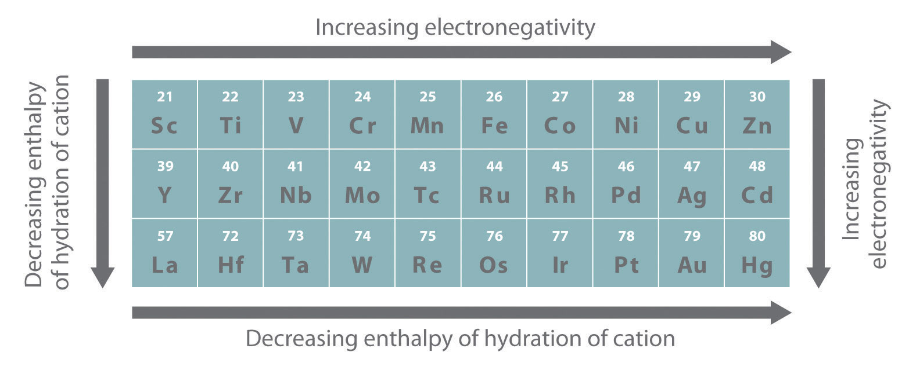

The transition metals, groups 3–12 in the periodic table, are generally characterized by partially filled d subshells in the free elements or their cations. (Although the metals of group 12 do not have partially filled d shells, their chemistry is similar in many ways to that of the preceding groups, and we therefore include them in our discussion.) Unlike the s-block and p-block elements, the transition metals exhibit significant horizontal similarities in chemistry in addition to their vertical similarities.
The valence electron configurations of the first-row transition metals are given in Table 23.1 "Valence Electron Configurations of the First-Row Transition Metals". As we go across the row from left to right, electrons are added to the 3d subshell to neutralize the increase in the positive charge of the nucleus as the atomic number increases. With two important exceptions, the 3d subshell is filled as expected based on the aufbau principle and Hund’s rule. Unexpectedly, however, chromium has a 4s13d5 electron configuration rather than the 4s23d4 configuration predicted by the aufbau principle, and copper is 4s13d10 rather than 4s23d9. In Chapter 7 "The Periodic Table and Periodic Trends", we attributed these anomalies to the extra stability associated with half-filled subshells. Because the ns and (n − 1)d subshells in these elements are similar in energy, even relatively small effects are enough to produce apparently anomalous electron configurations.
Table 23.1 Valence Electron Configurations of the First-Row Transition Metals
| Sc | Ti | V | Cr | Mn | Fe | Co | Ni | Cu | Zn |
|---|---|---|---|---|---|---|---|---|---|
| 4s23d1 | 4s23d2 | 4s23d3 | 4s13d5 | 4s23d5 | 4s23d6 | 4s23d7 | 4s23d8 | 4s13d10 | 4s23d10 |
In the second-row transition metals, electron–electron repulsions within the 4d subshell cause additional irregularities in electron configurations that are not easily predicted. For example, Nb and Tc, with atomic numbers 41 and 43, both have a half-filled 5s subshell, with 5s14d4 and 5s14d6 valence electron configurations, respectively. Further complications occur among the third-row transition metals, in which the 4f, 5d, and 6s orbitals are extremely close in energy. Although La has a 6s25d1 valence electron configuration, the valence electron configuration of the next element—Ce—is 6s25d04f2. From this point through element 71, added electrons enter the 4f subshell, giving rise to the 14 elements known as the lanthanides. After the 4f subshell is filled, the 5d subshell is populated, producing the third row of the transition metals. Next comes the seventh period, where the actinides have three subshells (7s, 6d, and 5f) that are so similar in energy that their electron configurations are even more unpredictable.
As we saw in the s-block and p-block elements, the size of neutral atoms of the d-block elements gradually decreases from left to right across a row, due to an increase in the effective nuclear charge (Zeff) with increasing atomic number. In addition, the atomic radius increases down a group, just as it does in the s and p blocks. Because of the lanthanide contraction, however, the increase in size between the 3d and 4d metals is much greater than between the 4d and 5d metals (Figure 23.1 "The Metallic Radii of the First-, Second-, and Third-Row Transition Metals"). (For more information on the lanthanides, see Chapter 7 "The Periodic Table and Periodic Trends", Section 7.3 "Energetics of Ion Formation".) The effects of the lanthanide contraction are also observed in ionic radii, which explains why, for example, there is only a slight increase in radius from Mo3+ to W3+.
Figure 23.1 The Metallic Radii of the First-, Second-, and Third-Row Transition Metals

Because of the lanthanide contraction, the second- and third-row transition metals are very similar in size.
As you learned in Chapter 7 "The Periodic Table and Periodic Trends", electrons in (n − 1)d and (n − 2)f subshells are only moderately effective at shielding the nuclear charge; as a result, the effective nuclear charge experienced by valence electrons in the d-block and f-block elements does not change greatly as the nuclear charge increases across a row. Consequently, the ionization energies of these elements increase very slowly across a given row (Figure 7.10 "A Plot of Periodic Variation of First Ionization Energy with Atomic Number for the First Six Rows of the Periodic Table"). In addition, as we go from the top left to the bottom right corner of the d block, electronegativities generally increase, densities and electrical and thermal conductivities increase, and enthalpies of hydration of the metal cations decrease in magnitude, as summarized in Figure 23.2 "Some Trends in Properties of the Transition Metals". Consistent with this trend, the transition metals become steadily less reactive and more “noble” in character from left to right across a row. The relatively high ionization energies and electronegativities and relatively low enthalpies of hydration are all major factors in the noble character of metals such as Pt and Au.
Figure 23.2 Some Trends in Properties of the Transition Metals
The electronegativity of the elements increases, and the hydration energies of the metal cations decrease in magnitude from left to right and from top to bottom of the d block. As a result, the metals in the lower right corner of the d block are so unreactive that they are often called the “noble metals.”
The similarity in ionization energies and the relatively small increase in successive ionization energies lead to the formation of metal ions with the same charge for many of the transition metals. This in turn results in extensive horizontal similarities in chemistry, which are most noticeable for the first-row transition metals and for the lanthanides and actinides. Thus all the first-row transition metals except Sc form stable compounds that contain the 2+ ion, and, due to the small difference between the second and third ionization energies for these elements, all except Zn also form stable compounds that contain the 3+ ion. The relatively small increase in successive ionization energies causes most of the transition metals to exhibit multiple oxidation states separated by a single electron. Manganese, for example, forms compounds in every oxidation state between −3 and +7. Because of the slow but steady increase in ionization potentials across a row, high oxidation states become progressively less stable for the elements on the right side of the d block. The occurrence of multiple oxidation states separated by a single electron causes many, if not most, compounds of the transition metals to be paramagnetic, with one to five unpaired electrons. This behavior is in sharp contrast to that of the p-block elements, where the occurrence of two oxidation states separated by two electrons is common, which makes virtually all compounds of the p-block elements diamagnetic.
Due to a small increase in successive ionization energies, most of the transition metals have multiple oxidation states separated by a single electron.
Most compounds of transition metals are paramagnetic, whereas virtually all compounds of the p-block elements are diamagnetic.
The electronegativities of the first-row transition metals increase smoothly from Sc (χ = 1.4) to Cu (χ = 1.9). Thus Sc is a rather active metal, whereas Cu is much less reactive. The steady increase in electronegativity is also reflected in the standard reduction potentials: thus E° for the reaction M2+(aq) + 2e− → M0(s) becomes progressively less negative from Ti (E° = −1.63 V) to Cu (E° = +0.34 V). Exceptions to the overall trends are rather common, however, and in many cases, they are attributable to the stability associated with filled and half-filled subshells. For example, the 4s23d10 electron configuration of zinc results in its strong tendency to form the stable Zn2+ ion, with a 3d10 electron configuration, whereas Cu+, which also has a 3d10 electron configuration, is the only stable monocation formed by a first-row transition metal. Similarly, with a half-filled subshell, Mn2+ (3d5) is much more difficult to oxidize than Fe2+ (3d6). The chemistry of manganese is therefore primarily that of the Mn2+ ion, whereas both the Fe2+ and Fe3+ ions are important in the chemistry of iron.
The transition metals form cations by the initial loss of the ns electrons of the metal, even though the ns orbital is lower in energy than the (n − 1)d subshell in the neutral atoms. This apparent contradiction is due to the small difference in energy between the ns and (n − 1)d orbitals, together with screening effects. The loss of one or more electrons reverses the relative energies of the ns and (n − 1)d subshells, making the latter lower in energy. Consequently, all transition-metal cations possess dn valence electron configurations, as shown in Table 23.2 for the 2+ ions of the first-row transition metals.
All transition-metal cations have dn electron configurations; the ns electrons are always lost before the (n − 1)d electrons.
Table 23.2 d-Electron Configurations of the Dications of the First-Row Transition Metals
| Ti2+ | V2+ | Cr2+ | Mn2+ | Fe2+ | Co2+ | Ni2+ | Cu2+ | Zn2+ |
|---|---|---|---|---|---|---|---|---|
| d 2 | d 3 | d 4 | d 5 | d 6 | d 7 | d 8 | d 9 | d 10 |
The most common oxidation states of the first-row transition metals are shown in Table 23.3 "Common Oxidation States of the First-Row Transition Metals*". The second- and third-row transition metals behave similarly but with three important differences:
The highest possible oxidation state, corresponding to the formal loss of all valence electrons, becomes increasingly less stable as we go from group 3 to group 8, and it is never observed in later groups.
In the transition metals, the stability of higher oxidation states increases down a column.
Table 23.3 Common Oxidation States of the First-Row Transition Metals*
| Sc | Ti | V | Cr | Mn | Fe | Co | Ni | Cu | Zn | |
|---|---|---|---|---|---|---|---|---|---|---|
| electronic structure | s 2 d 1 | s 2 d 2 | s 2 d 3 | s 1 d 5 | s 2 d 5 | s 2 d 6 | s 2 d 7 | s 2 d 8 | s 1 d 10 | s 2 d 10 |
| oxidation states | I | I | ||||||||
| II | II | II | II | II | II | II | II | II | ||
| III | III | III | III | III | III | III | III | III | ||
| IV | IV | IV | IV | IV | IV | IV | ||||
| V | V | V | V | V | ||||||
| VI | VI | VI | ||||||||
| VII | ||||||||||
| *The convention of using roman numerals to indicate the oxidation states of a metal is used here. | ||||||||||
Binary transition-metal compounds, such as the oxides and sulfides, are usually written with idealized stoichiometries, such as FeO or FeS, but these compounds are usually cation deficient and almost never contain a 1:1 cation:anion ratio. Thus a substance such as ferrous oxide is actually a nonstoichiometric compound with a range of compositions.
The acid–base character of transition-metal oxides depends strongly on the oxidation state of the metal and its ionic radius. Oxides of metals in lower oxidation states (less than or equal to +3) have significant ionic character and tend to be basic. Conversely, oxides of metals in higher oxidation states are more covalent and tend to be acidic, often dissolving in strong base to form oxoanions.
Two of the group 8 metals (Fe, Ru, and Os) form stable oxides in the +8 oxidation state. Identify these metals; predict the stoichiometry of the oxides; describe the general physical and chemical properties, type of bonding, and physical state of the oxides; and decide whether they are acidic or basic oxides.
Given: group 8 metals
Asked for: identity of metals and expected properties of oxides in +8 oxidation state
Strategy:
Refer to the trends outlined in Figure 23.1 "The Metallic Radii of the First-, Second-, and Third-Row Transition Metals", Figure 23.2 "Some Trends in Properties of the Transition Metals", Table 23.1 "Valence Electron Configurations of the First-Row Transition Metals", Table 23.2, and Table 23.3 "Common Oxidation States of the First-Row Transition Metals*" to identify the metals. Decide whether their oxides are covalent or ionic in character, and, based on this, predict the general physical and chemical properties of the oxides.
Solution:
The +8 oxidation state corresponds to a stoichiometry of MO4. Because the heavier transition metals tend to be stable in higher oxidation states, we expect Ru and Os to form the most stable tetroxides. Because oxides of metals in high oxidation states are generally covalent compounds, RuO4 and OsO4 should be volatile solids or liquids that consist of discrete MO4 molecules, which the valence-shell electron-pair repulsion (VSEPR) model predicts to be tetrahedral. Finally, because oxides of transition metals in high oxidation states are usually acidic, RuO4 and OsO4 should dissolve in strong aqueous base to form oxoanions.
Exercise
Predict the identity and stoichiometry of the stable group 9 bromide in which the metal has the lowest oxidation state and describe its chemical and physical properties.
Answer: Because the lightest element in the group is most likely to form stable compounds in lower oxidation states, the bromide will be CoBr2. We predict that CoBr2 will be an ionic solid with a relatively high melting point and that it will dissolve in water to give the Co2+(aq) ion.
The transition metals are characterized by partially filled d subshells in the free elements and cations. The ns and (n − 1)d subshells have similar energies, so small influences can produce electron configurations that do not conform to the general order in which the subshells are filled. In the second- and third-row transition metals, such irregularities can be difficult to predict, particularly for the third row, which has 4f, 5d, and 6s orbitals that are very close in energy. The increase in atomic radius is greater between the 3d and 4d metals than between the 4d and 5d metals because of the lanthanide contraction. Ionization energies and electronegativities increase slowly across a row, as do densities and electrical and thermal conductivities, whereas enthalpies of hydration decrease. Anomalies can be explained by the increased stabilization of half-filled and filled subshells. Transition-metal cations are formed by the initial loss of ns electrons, and many metals can form cations in several oxidation states. Higher oxidation states become progressively less stable across a row and more stable down a column. Oxides of small, highly charged metal ions tend to be acidic, whereas oxides of metals with a low charge-to-radius ratio are basic.
The transition metals show significant horizontal similarities in chemistry in addition to their vertical similarities, whereas the same cannot be said of the s-block and p-block elements. Explain why this is so.
The energy of the d subshell does not change appreciably in a given period. Why? What effect does this have on the ionization potentials of the transition metals? on their electronegativities?
Standard reduction potentials vary across the first-row transition metals. What effect does this have on the chemical reactivity of the first-row transition metals? Which two elements in this period are more active than would be expected? Why?
Many transition metals are paramagnetic (have unpaired electrons). How does this affect electrical and thermal conductivities across the rows?
What is the lanthanide contraction? What effect does it have on the radii of the transition metals of a given group? What effect does it have on the chemistry of the elements in a group?
Why are the atomic volumes of the transition elements low compared with the elements of groups 1 and 2? Ir has the highest density of any element in the periodic table (22.65 g/cm3). Why?
Of the elements Ti, Ni, Cu, and Cd, which do you predict has the highest electrical conductivity? Why?
The chemistry of As is most similar to the chemistry of which transition metal? Where in the periodic table do you find elements with chemistry similar to that of Ge? Explain your answers.
The coinage metals (group 11) have significant noble character. In fact, they are less reactive than the elements of group 12. Explain why this is so, referring specifically to their reactivity with mineral acids, electronegativity, and ionization energies. Why are the group 12 elements more reactive?
Give the valence electron configurations of the 2+ ion for each first-row transition element. Which two ions do you expect to have the most negative E° value? Why?
Arrange Ru3+, Cu2+, Zn, Ti4+, Cr3+, and Ni2+ in order of increasing radius.
Arrange Pt4+, Hg2+, Fe2+, Zr4+, and Fe3+ in order of decreasing radius.
Of Ti2+, V2+, Mn2+, Fe2+, Co2+, Ni2+, and Zn2+, which divalent ion has the smallest ionic radius? Explain your reasoning.
Ti2+, 3d2; V2+, 3d3; Cr2+, 3d4; Mn2+, 3d5; Fe2+, 3d6; Co2+, 3d7; Ni2+, 3d8; Cu2+, 3d9; Zn2+, 3d10. Because Zeff increases from left to right, Ti2+ and V2+ will have the most negative reduction potentials (be most difficult to reduce).
Hg2+ > Fe2+ > Zr4+ > Fe3+ > Pt4+